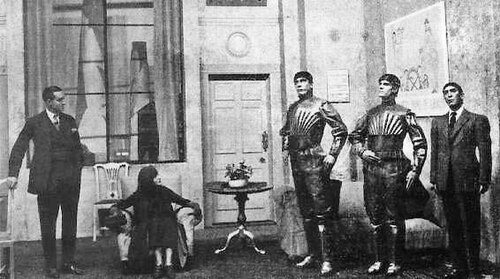
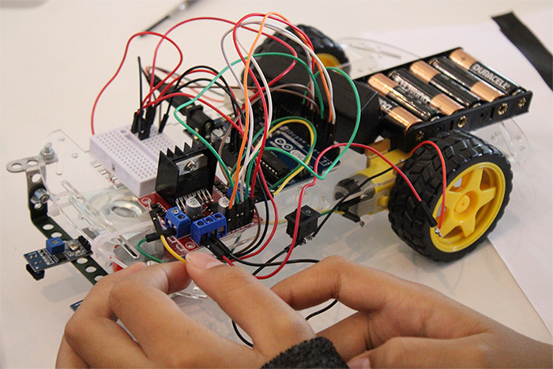

ROBÓTICA CLASSICA

Origem da robótica:
A robótica começou na Grécia Antiga, onde os primeiros dispositivos mecânicos criados por inventores como Arquitas de Tarento e Heron de Alexandria.
era renascimentista: Projetos de máquinas e leões mecânicos esboçados por Leonardo da Vinci no século 15.
Século 18: Relojoeiros europeus construíram bonecos complexos capazes de escrever e se mover. E tudo isso só com engrenagens, cordas e mecânicos simples consideirando a ds diferenças entre o século 21 e o século 18.
Last updated 3 mins ago

Origem da palavra e da ficção:
1920-1921: O escritor tcheco Karel Čapek usou pela primeira vez a palavra "robô" na peça R.U.R. (Rossum's Universal Robots), onde é uma peça de teatro de ficção científica escrita pelo autor tcheco Karel Čapek em 1920 e estreada em 1921. A obra se tornou um marco histórico por introduzir a palavra "robô" no vocabulário mundial, mudando para sempre a ficção científica e a tecnologia, O termo foi sugerido ao autor por seu irmão, Josef Čapek, a partir da palavra checa robota, que significa trabalho forçado ou servidão.
Em 1942: O escritor Isaac Asimov foi um escritor americano de origem russa, amplamente considerado um dos maiores autores de ficção científica de todos os tempos e o pai espiritual da robótica moderna. E introduziu formalmente o termo "robótica" e formulou as Três Leis da Robótica em suas histórias de ficção científica.
Last updated 3 mins ago

Robótica industrial:
1954-1958: O primeiro braço mecânico digital e programável da história foi o Unimate, criado pelo inventor americano George Devol em 1954. O inventor George Devol patenteou um dispositivo sob o nome de "Programmed Article Transfer" (Transferência Programada de Artigos). Pouco tempo depois, em 1956, ele se aliou ao engenheiro e empresário Joseph Engelberger para fundar a Unimation, a primeira empresa de robótica do mundo.
1961: O Unimate, primeiro robô industrial patenteado por Devol e construído com Joseph Engelberger, foi instalado em uma linha de montagem da General Motors.
Décadas de 1970 a 1990: A chegada de microprocessadores e da inteligência computacional deu autonomia e expansão aos robôs na medicina, no espaço e nas indústrias.
Last updated 3 mins ago
ROBÓTICA ATUAL
A robótica atual avançou em um nivel que existem maquinas que podem andar sem nenhum operador controlando, códigos que tem acessos a bancos de dados extremamente extensos, sistemas de seguranças impenetraveis e a baratização de tecnologia.

Aplicação nas escolas:
Hoje em dia, nas escolas de hoje ensinam sobre a robótica, programação e outras ferramentas que envolve com os computadores. E que acaba mostrando que a cada dia a tecnologia mais avançada fica mais acessivel para a população comum nos dias de hoje.
A "super automação":
Nos dias de hoje existem máquinas que substituem pessoas em empregos faceis e perigoosos, como:
artistas;
cineastas;
operadores de telemarkiting;
recepcionistas;
montadores de peças;
entre outros.
A criação de novos empregos:
Com o avanço da tecnologia, novos empregos voltados a área de arrumar e criar tecnologias foram criados e hoje em dia esses emprecos foram crecendo até chegar em um ponto que sem esses empregos é impossivel uma nação crecer. Como:
engenheiro de prompt;
cientista de dados;
engenheiro de machine leaning;
anotador de dados;
ente outros.
Etec de hortolândia©-Todos os direitos reservados
Trabalho acadêmico sem fins lucrativos.